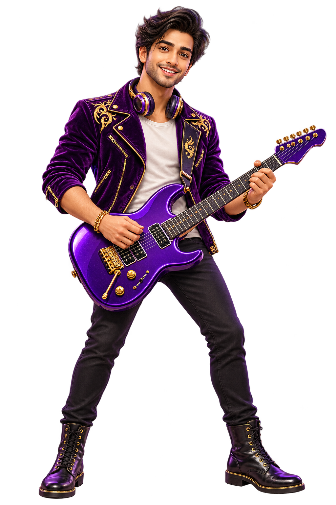

Browser preview · app not released
YOUR MUSIC. YOUR VIDEOS.
Give your world
a little Aura.
One home for the songs you love and the videos you keep. A new player from Ashtadeep.
Try your own audio or video file in this browser preview.

TRY IT HERE
Bring a file.
Press play.
This preview plays browser-supported audio and video from your device. Your selected file is not uploaded.
Your next favourite moment.
Choose an audio or video file below.Nothing selected yet
Nothing plays until you choose a file and press play.
Format support depends on your browser.
RIFF IN MOTION
A little rhythm.
A lot of Aura.
Meet our rockstar companion in motion. Pick a clip and press play.
Clips play only when you choose. Use the player controls to pause, replay or view fullscreen.
A QUIETER KIND OF PLAYER
Your collection.
Your space.
Play your own files in this browser preview without an account or advertising interruptions.
For this website preview, selected media stays in your browser. There are no analytics scripts, sign-ups or uploads.
STRAIGHT ANSWERS
A few things to know.
Can I download the Aura app today?
The Aura app is not available for download. You can try local playback in the browser preview above.
Does Aura include a music or movie catalogue?
No catalogue is provided. The browser preview plays audio and video files you select from your device.
Why doesn’t my file play in this preview?
Browsers support different codecs and containers. Try an MP3 audio file or an MP4 video with H.264 video and AAC audio.
Who is the guitarist?
Meet Riff: the original human-like rockstar mascot created for Ashtadeep Aura. A violet-and-gold stage jacket inspired by Bollywood and Hollywood, headphones, and an electric guitar.
AN ASHTADEEP APP
Good company.
Great possibilities.
Aura joins the Ashtadeep family alongside AshtaLok.